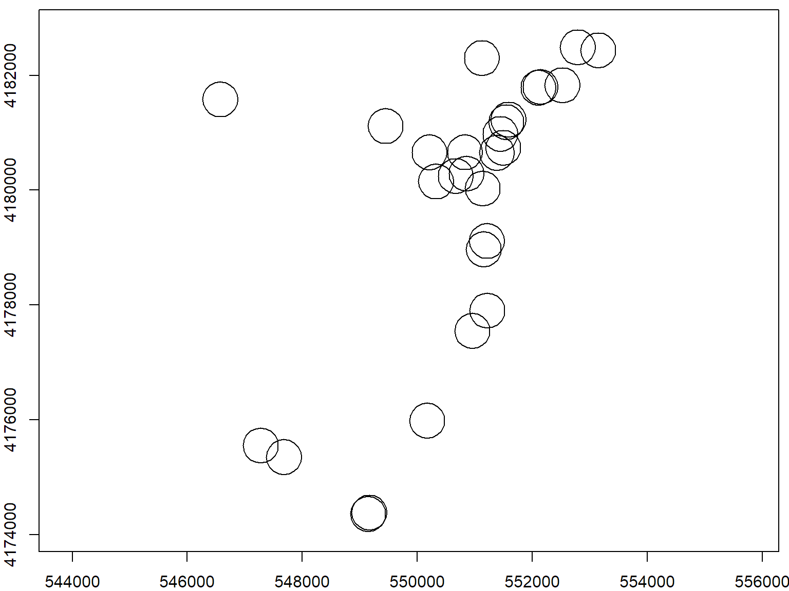

rgeos package
Wrapper for the Geometry Engine Open Source (a C++ port of the Java Topology Suite).
Functions Sampler
Spatial Proximity Tests
gContains()
gCovers()
gEquals()
gIntersects()
gOverlaps()
gTouches()
gWithinDistance()
Create New Geometries
gBuffer()
gConvexHull()
gDifference()
gIntersection()
gSimplify()
gUnion()
Geometric Properties
gArea()
gCentroid()
gDistance()
gLength()
Many functions from rgeos have a byid argument. byid=TRUE means applies the processing to individual features.
Examples
Load Some Data
To try it out, let's open the SF neighboods and cannabis dispensaries you opened in an earlier exercise.
library(rgdal)
sf_nb_ll <- readOGR("../exercises/data", "sf_neighborhoods")
## OGR data source with driver: ESRI Shapefile
## Source: "../exercises/data", layer: "sf_neighborhoods"
## with 41 features
## It has 1 fields
fn <- "../exercises/data/sf_permitted_cannabis_dispensaries_2014.kml"
sf_pot_ll <- readOGR(fn, "Cannabis Dispensaries 2014")
## OGR data source with driver: KML
## Source: "../exercises/data/sf_permitted_cannabis_dispensaries_2014.kml", layer: "Cannabis Dispensaries 2014"
## with 28 features
## It has 2 fields
plot(sf_nb_ll, axes=T, asp=1)
plot(sf_pot_ll, add=T, col="red", pch=16)
Project the Data
Distance and area are only meaningful with projected data. Hence you typically project data before geoprocessing.
Project the San Francisco data to UTM Zone 10
utm10n <- CRS("+proj=utm +zone=10 +ellps=WGS84")
sfnb_prj <- spTransform(sf_nb_ll, utm10n)
sfpot_prj <- spTransform(sf_pot_ll, utm10n)
plot(sfnb_prj, axes=T, asp=1)
plot(sfpot_prj, add=T, col="blue", pch=16)
Area and Centroids
gArea()
sfnb_area <- gArea(sfnb_prj, byid=TRUE)
str(sfnb_area)
## Named num [1:41] 13390446 2790169 2218769 581470 3603578 ...
## - attr(*, "names")= chr [1:41] "0" "1" "2" "3" ...
gCentroid()
sfnb_ctr_sp <- gCentroid(sfnb_prj, byid=TRUE)
class(sfnb_ctr_sp)
## [1] "SpatialPoints"
## attr(,"package")
## [1] "sp"
plot(sfnb_prj, axes=TRUE, asp=1)
plot(sfnb_ctr_sp, col="purple", pch=17, cex=1.2, add=TRUE)
Buffers
gBuffer(spgeom, byid, id, width)
- spgeom: must be a SpatialPolygon* object
- byid: apply to individual features
- width: in map units, (postive=outer buffer, negative=inner
buff_dist <- 1000 * 0.3048 ## 1000 ft in meters
sfpot_buf_prj <- gBuffer(sfpot_prj, byid=T, width=buff_dist)
plot(sfpot_buf_prj, axes=TRUE)

Note the difference that byid=F makes:
sfpot_buf_prj <- gBuffer(sfpot_prj, byid=F, width=buff_dist)
plot(sfpot_buf_prj, axes=TRUE)
Intersections
Intersect the buffered dispensaries with just one of the neighborhood boundaries.
nb_name <- "Mission"
mission_bnd <- sfnb_prj[sfnb_prj@data$nhood==nb_name, ]
mission_intrsct_pot <- gIntersection(mission_bnd, sfpot_buf_prj)
plot(mission_bnd, axes=T, asp=1)
plot(mission_intrsct_pot, col="red", add=T)
Compute the percentage of the Mission neighborhood that falls within 1000 feet of a cannabis dispensary.
gArea(mission_intrsct_pot) / gArea(mission_bnd)
## [1] 0.276493
Delaunay Triangulation
Delaunay Triangulation: a triangular network connecting a set of points such that for each edge we can find a circle containing the edge's endpoints but not containing any other points.
Create a Delaunay Triangulation for the cannabis dispensaries.
sfpot_deltri <- gDelaunayTriangulation(sfpot_prj)
plot(sfpot_prj, col="red", pch=16, cex=2, axes=TRUE)
plot(sfnb_prj, border="grey60", add=TRUE)
plot(sfpot_deltri, add=TRUE, border="darkorchid3", lwd=2)
Convex Hull / Minimum Convex Polygon
sfpot_ch <- gConvexHull(sfpot_prj)
plot(sfpot_prj, col="red", pch=16, cex=2, axes=TRUE)
plot(sfnb_prj, border="grey60", add=TRUE)
plot(sfpot_ch, add=TRUE, border="darkorchid3", lwd=2)